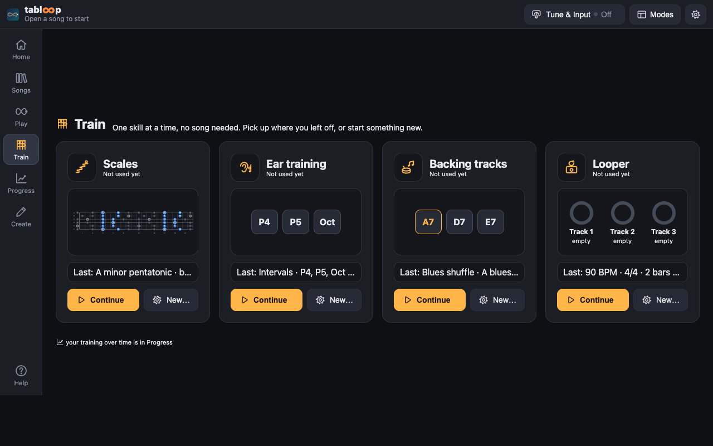
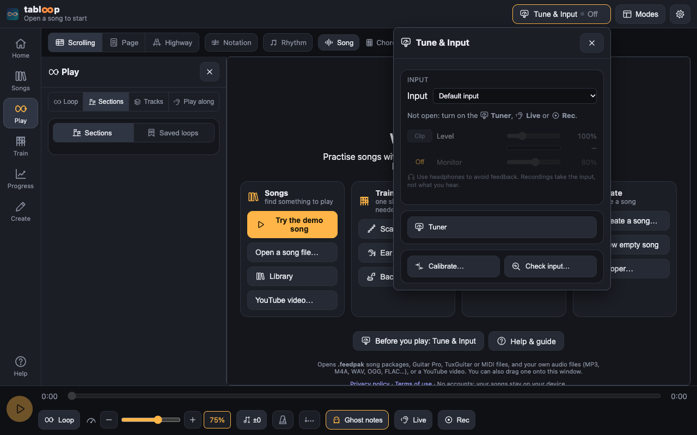

Tabloop help
Tabloop is a free practice player for guitar, bass, drums and vocals. It shows the tab of a song while the recording plays, so you can follow along, slow down, loop the hard parts, see how well you play or sing, and see how your practice adds up.
It runs in your browser, with nothing to install. Songs you open stay on your device: nothing is uploaded, and there's no account.
New to it? Take the guided tour: it points at where each feature lives in the app, step by step (about a minute). It's also in the app's ⚙ Settings → 🔒 Privacy & about (Take the tour), with short tours on practising with your instrument, singing and sync & backup, and What's new.
Open TabloopWatch the 1-minute demo
Demo video
The quickest way to try everything: open Tabloop and press ▶ Try the demo song. It loads “First Riff”, a short original song made for this guide, with lead guitar, bass and drums, lyrics and a vocal melody.

Where things are
The tab gets the room; everything else is in five groups, on the rail on the left (a computer) or the tabs at the bottom (a phone):
- Songs: at the top Open file…, Folder…, YouTube… and ＋ Playlist (add the song to a playlist); under them your library, recent songs, playlists and the saved loops of all your songs in one list with a search and four tabs. In the Library and Recent tabs a song with saved loops shows 🔁 2 (how many) beside it: click it to list its loops under the song, then click a loop to open the song and loop it. 📚 Library…, 🎵 Playlists… and 🔁 Loops… open the full lists.
- Play: everything for the song you're playing, in four pages with tabs at the top (like Songs'): Play along · Sections · Loop · Takes. One page shows at a time; a song opens at Play along. Loop: the loop (⟲ Loop: On / Off, its name, Restart, Save, the start and end nudges) and the 🏋 speed trainer, there with or without a loop, and under them this song's Saved loops. Sections: the song's sections (on a wide screen 📌 pins them beside the tab, whatever page Play shows). Each part's level, M mute and S solo: 🎚 Mixer in the top bar. Play along: a line showing your input (tap it for Tune & Input), 👂 Live, 📊 This song (the song's stats: your best Live pass, top speed, plays, time, takes) and 🎤 Sing when the song has vocals. Takes: ⏺ Rec and 🎙 your takes (the take you're on, ▶ Play take, ‹ Prev / Next ›, what you hear, the nudge); a dot on its tab while Rec is armed (filled while it records). Turning on ⟲ Loop opens the Loop page, 👂 Live the Play along page, ⏺ Rec the Takes page; a section clicked on the Sections page loops it and stays there.
- Train: one skill at a time — 🎼 Scales, 🎧 Ear training or 🥁 Backing tracks. Each tile shows when you last used it and its last settings: ▶ Continue picks it up, New… changes them. The trainer then fills the screen with its own header (‹ Train goes back).
- Progress: a page of how you're doing — today's 📅 plan session, your streak and time, the calendar, your songs, ear training, goals this week, 🎯 Target practice and what you entered. Tap any of it to go there (see Practice tracking).
- Create: ✏ Edit the tab, ⏺ Transcribe, 📷 Tab from an image, ＋ Create a song, ＋ New empty song, ⇆ Sync, the vocal melody (🎹 from MIDI, 🔎 find it), ＋ Drums / ＋ Instrument and their sync, ➿ Looper and 💾 Save pack.
Always there: the top bar (the song and its parts, 🎸 Tune & Input — your input, its level and monitoring, the Tuner, ⏱ Calibrate and 🔍 Check input, all in one place — the 📐 layout switch, at every size, and ⚙ Settings), the view toolbar (Scrolling / Page / Highway, Notation, Rhythm, Song / Tab / Both — what you hear: a click cycles the recording, the tab synth, or both; right-click or press and hold for the three — Lyrics, Chords, Zoom or text size) and the transport at the bottom: ▶, the seek bar, ⟲ Loop, the speed, the pitch, metronome, count-in, 👂 Live and ⏺ Rec, for songs, scales, backing tracks and the looper alike. A plan session's timer is a chip at its end: tap it to pause, skip or mark the task done. Turning on Loop, Live, Rec or Sync shows its group.


Rail and Modes
Two layouts of the same groups. Rail (computers): a rail on the left with the five groups and Help; Songs, Play and Create open a panel beside the tab (over it in a narrow window) that closes with ✕ or its rail button; Train and Progress take the place of the tab until you go back (Play, or the same button again). Modes (phones, tablets held upright): the five groups are tabs at the bottom. On a phone held upright, Play's controls are a row of small cards under the tab (swipe for more; tap one to open it), so the tab keeps more than half the screen; held sideways, the groups sit on the left and the panel on the right. Songs and Create's list open full height. On a wide screen in Modes the groups are in the top bar instead. Automatic (the default, ticked in ⚙ Settings → Display → Layout) uses Modes while the screen is upright or small and Rail otherwise; the 📐 button in the top bar (at every size; an icon on a phone) switches at once and remembers your choice, which turns Automatic off: tick it again to go back. The choice is kept for this device only, not in backups. On a phone, Help is in 🎸 Tune & Input and on the welcome screen.
Button labels (⚙ Settings → Display): Icons with words (the default) or Icons only, the words then shown as tooltips (and still read out by screen readers). Theme: Dark (the default), Light, High contrast, Midnight blue, Warm, or Automatic (as your system); the tab and the highway follow, and on the light theme the palest string colours are drawn darker.
Opening songs
Tabloop plays feedpak song packages: .feedpak files, which hold the recording, the tab and the song's sections. A pack can be a single zipped file or an unpacked folder.
- Open file: pick a
.feedpakfile. - Open folder (computers only): pick an unpacked pack folder. In the folder picker the files inside look greyed out; select the folder itself.
- Drag and drop a file or folder onto the window.
- 🕘 Recent (in Songs, and on the welcome screen under 📚 Library) reopens one of the last 5 songs you played. It shows once you have played a song.
- ▶ YouTube: paste a YouTube link to loop and slow down a video (see YouTube songs).
- Guitar Pro, TuxGuitar and MIDI files (
.gp3,.gp4,.gp5,.gpx,.gp,.tg,.mid) open the same ways, as songs played by Tabloop's synths (see Guitar Pro & MIDI files). - Your own audio files (MP3, M4A, WAV, OGG, FLAC, Opus): a song you bought, ripped or recorded opens the same ways, as a song to slow down, loop and record yourself over; ＋ Create adds a tab to it and makes it a feedpak (see Create a song).
Guitar Pro, TuxGuitar & MIDI files
Tabloop opens Guitar Pro files (.gp3, .gp4, .gp5, .gpx from Guitar Pro 6 and .gp from Guitar Pro 7 and 8), TuxGuitar files (.tg, saved by TuxGuitar 2) and MIDI files (.mid) as songs: use Open file, drop the file on the window, Open folder on a folder holding one, or keep them in your 📚 Library folder (they're listed with your feedpaks).
- Each track becomes a part. Guitar and bass tracks are tab, with their tuning (4 to 8 strings) and capo; keyboards are a piano roll; the drum track is the drum part; a vocal track is the 🎤 Vocals melody, with the lyrics if the file has them. In a MIDI file, guitar and bass are fretted for you in standard tuning.
- Played as written: the tempo changes, the bars and time signatures (the metronome and count-in follow them), the file's markers as sections, and repeats and first / second endings played out, so loops and sections work on the song as you hear it.
- Techniques shown and played: hammer-ons and pull-offs, slides, bends (with their shape), vibrato, harmonics, palm mute, dead notes, tapping, accents, let ring, tremolo picking and trills, ties, grace notes, chords with their names, and the fingering when the file gives it.
- There's no recording: the song plays with Tabloop's tab synth (switched on for you; Audio: Tab / Both), the keys synth and the drum synth. Each part plays while it's shown: add parts with the + on their tabs. ⏺ Rec records you over it as usual.
- 💾 Save pack turns it into a feedpak, so it opens like any other song (and keeps your loops and sections).
- Not carried over: swing (triplet feel), D.C. / D.S. / coda jumps, gradual tempo changes (they change at once), the whammy bar, and a Guitar Pro 7 file's own audio track. The message when the song opens says what applies to that file.
Create a song
Have a recording of a song (an MP3, M4A, WAV, OGG, FLAC or Opus file) and a tab for it? Tabloop puts them together, lines them up and saves them as a feedpak.
- The recording: press ＋ Create a song (on the welcome screen or in the Create group) and choose the file, or simply open it with Open file or drop it on the window. It plays like any song: speed and pitch, loops and saved loops, ⏺ Rec, 👂 Live, the mixer (one Song track). So an audio file alone is already useful: open it, loop the hard part, slow it down, record yourself.
- Title, artist, album, year and cover are read from the file's tags (or the title from the file name). Change them in ＋ Song… (in Create), and choose another cover image if you like.
- The tab: in ＋ Song…, choose a Guitar Pro, TuxGuitar or MIDI file, or parts of a feedpak you have, and tick the parts to use (guitar and bass tab, keys, drums, vocals and lyrics); its bars, beats and sections come with it. Or write one yourself: ✏ Edit on the empty My tab part, 📷 Tab from an image, or ＋ Instrument for a MIDI file.
- ⇆ Sync lines the tab up with the recording. A tab file rarely starts when the recording does, and its tempo is rarely the band's. In the sync bar:
- Shift it: −100 / −10 / +10 / +100 ms, type an offset, or put the cursor where the first note sounds and press ⌖ First note here.
- Tempo: type the recording's tempo (BPM); the tab is stretched to it, its first note staying where it is.
- 📍 Two points (the surest): say where bar 1 (①) and a bar near the end (②) are in the recording. Play, pause on the bar's first beat, and press ⌖ Now (or type the time). ① shifts the tab, ② stretches it with ① kept in place. Tempo changes in the tab file are kept, stretched the same.
- 🥁 Tap the beats: play the song and tap T (or the Tap button) on every beat, at least 8 times, then Use the taps. Tick Follow my tapping for a recording that speeds up and slows down (played without a click). A missed beat now and then doesn't matter.
- ✨ Guess listens to the recording and suggests where the tab's notes land. Listen and check; ↶ undoes any change.
- 💾 Save pack saves it all as a feedpak: the recording, the title, artist and cover, the tab lined up, its beats, sections and lyrics. A WAV or OGG recording goes in as it is. For MP3, M4A or FLAC it asks: keep it as it is (smaller; Tabloop and most players play it) or store it as WAV (bigger: about 10 MB a minute, but every feedpak player must play it — choose this for a pack you share).
- Kept until you're done: a song you're making is kept on this device, with a copy of the recording and the tab file, so you can come back to it from ＋ Create's list or 🕘 Recent without the files; opening the same recording again continues it. Forget removes it. Nothing is uploaded.
A new empty song
No recording yet? Write the song from scratch: in ＋ Create, press ＋ New empty song….
- Its settings: the title and artist, the tempo (BPM, in quarter notes), the time signature (4/4, 3/4, 2/4, 5/4, 6/8, 7/8, 12/8), the key and the length in bars. Optional: changes of tempo or time signature at a bar (9: 3/4, 17: 140, 25: 6/8 90), sections by bar (1: Intro, 5: Verse, 13: Chorus) and lyrics (a line per phrase, starting with its bar: 5: Here comes the first line; the words fall on the bar's beats).
- Its parts: ＋ Part adds one: guitar (6, 7 or 8 strings) or bass (4, 5 or 6), each with its tuning (standard, drop D, E♭, D, drop C, open G, open D, DADGAD; drop A for 7 strings…) and capo; keys; drums.
- Create the empty song opens it: bar 1 starts at 0:00, with the beat grid (the metronome, the count-in, loops and sections by bar all work) and the parts empty. Nothing plays but the synths, so the tab synth is switched on.
- Write it: the guitar and bass parts in ✏ Edit (click a string to add a note on the grid), or play them in with ⏺ Transcribe. Keys parts are filled by ⏺ Transcribe (single notes); drum parts stay empty for now.
- Longer: write a note in the last bar and the song grows by a few bars; or ＋ 4 bars / ＋ 8 bars in ＋ Song…, where you change any of its settings too (the notes you wrote stay where they are).
- Kept and saved like the songs you create from a recording: in ＋ Create's list and 🕘 Recent, and 💾 Save pack makes it a feedpak (with a silent stem, until it has a recording).
- Add a recording… (in ＋ Song…) when you've recorded it: the recording becomes the song, with what you wrote as its tab (your edits in it), lined up with ⇆ Sync as above.
Scales
🎼 Scales (on the welcome screen, or in Train) shows any scale on the fretboard, in every shape and position, and lets you practise it like a song.
- The scale and key: the major scale and its modes (Ionian, Dorian, Phrygian, Lydian, Mixolydian, Aeolian, Locrian), major and minor pentatonic, the blues scales (minor and major), harmonic minor and its modes (Phrygian dominant…), melodic minor and its modes (Lydian dominant, altered…), whole-tone, the two diminished scales (half-whole, whole-half) and chromatic, in any of the 12 keys. Its notes are spelled as musicians write them (E♭ major has an A♭, not a G♯; D♭ major but C♯ minor), with the degrees (1 ♭3 4 5 ♭7…) and the formula (W W H W W W H…).
- The instrument: 6-string guitar in standard, Drop D, E♭, D, Drop C, Open G or DADGAD, 7- and 8-string guitars, 4-, 5- and 6-string bass, or the tuning of the song you have open; 12 to 24 frets.
- The shapes: CAGED (five shapes, for the major, minor, pentatonic and blues scales and the modes: C A G E D for scales with a major third, Am Gm Em Dm Cm for minor ones), notes per string (a pattern from each degree, below), the five pentatonic boxes (the blues scales add the blue note), a position at any fret (one finger per fret, for any scale), or the whole neck. Tick one shape or several; each repeats 12 frets up the neck, and Frets from … to … keeps only the ones in that part of the neck.
- Notes per string: choose 1, 2, 3, 4, 5 or 6 notes on each string, 2-3 or 3-4 alternating, or Custom… and type a digit (1–6) per string from the lowest string up, e.g.
3-3-4-3-3-3or2-3-2-3-2-2(a shorter pattern, like2-3, repeats across the strings; press Enter or Tab to use it). The scale is laid out in order, that many notes on each string, starting on each degree in turn (Pattern 1 (from the root), Pattern 2 (from 2)…), and repeats up the neck. 1 note per string is an arpeggio-like run: from the degree on the lowest string, each string takes the scale note nearest that fret, so the run skips notes (in 3rds and 4ths) and stays in one position. The fingers keep the hand in one position where they can (one finger per fret, a fret's stretch at most); when a string's notes need more, the hand shifts by sliding the same finger to the next note (4 notes over 6 frets: 1, slide 1, 3, 4), drawn as a bar between the two dots, with a dashed ring where the hand moves, and played as a slide on the tab. Choices that can't fit on the neck (5 notes per string of a 7-note scale across 6 strings is over four octaves) are greyed out, and a custom pattern that isn't one (a digit outside 1–6, more digits than strings) says what's wrong. The exercises are named 4nps pattern 2, 2-3nps pattern 1, Custom 3-3-4-3-3-3 pattern 1, and kept apart in 📈 Practice; 3 notes per string has the same shapes (3nps 1 (from 1)) as before. - The fretboard shows every note of the scale, the chosen shapes in colour and the root ringed, labelled with the degrees, the note names or the fingers suggested (1–4, ○ for an open string). Point at a dot for its note, degree, string and fret.
- The exercise: ascending, descending or both (ascending + descending, or descending + ascending), straight or in sequences (3s, 4s, thirds, the cascade), at a tempo, in quarters, 8ths, triplets or 16ths, each shape repeated as often as you like. A line under it shows the order you'll play, in degrees (a root above the shape's lowest is 8).
- The cascade: a few notes in a row, then back one — to the 2nd note you just played — and on: 8 7 6 5 · 7 6 5 4 · 6 5 4 3 · 5 4 3 2 · 4 3 2 1. Group: 3, 4, 5 or 6 notes (4 by default). It's descending when you pick it (ascending mirrors it, 1 2 3 4 · 2 3 4 5 …; both ways are there too) and ends on the root: down from the shape's top note to its lowest root, up from its bottom note to its highest root, root to root both ways. On a string plays each group on one string where it fits within the shape's frets (a fret either side at most, a 5-fret span), so a few notes on a string, then the next; a group that doesn't fit stays across the strings as in the shape. It fits best with as many notes per string as notes in the group: 3 per string in groups of 3 puts every group on a string; 4 per string in groups of 4, about a third of them; 3 per string in groups of 4, none (it would take a 6-fret stretch). Legato (pull-offs) marks a group's notes after the first on the same string as pull-offs (descending) or hammer-ons (ascending), on the tab. In 📈 Practice each cascade is its own exercise (3nps 1 (from 1) · fret 3 · cascade 4 back1, with on a string and legato if chosen).
- ▶ Practise opens it as the song (“Scales: A minor pentatonic, box 1”): the tab in Scrolling, Page and Highway, the tab synth plays it, each shape is a section to loop, and speed, the metronome, the speed trainer, 👂 Live and ⏺ Rec work as on any song. 💾 Save pack keeps it as a feedpak.
- ↩ Back to song (in the top bar, and in the dialog) opens the song you had open again.
- The time you practise scales, and your 👂 Live scores, go into 📈 Practice as Scales (not as a song), by scale, key and shape.
Backing tracks
🥁 Backing tracks (in Train, or on the welcome screen) makes a band to improvise over: drums, bass, keys and a rhythm guitar, played by Tabloop's own synths, in the style, tempo, key and chords you choose.
- Style: blues shuffle, slow blues (12/8), rock, pop, funk, jazz swing, bossa nova, reggae, metal, ballad and country, each with its own drum pattern and fill, bass line and comping. A few examples: the blues shuffle has a shuffled hi-hat, a walking boogie bass (root, 3rd, 5th, 6th) and the guitar's root–5th / root–6th riff; jazz swing the swung ride cymbal, the hi-hat on 2 and 4, a walking bass (a note a beat: the root, chord tones, passing notes and a half step into the next chord) and rootless piano voicings; funk sixteenth hi-hats with ghost notes, a syncopated octave bass and scratchy upper-string guitar; bossa nova the clave on the rim, a root–5th bass and the guitar's thumb and syncopated chords; reggae the one-drop, the organ bubble and offbeat skanks; metal eighth-note kicks and palm-muted power-chord chugs. The dialog says what each sounds like.
- Tempo (BPM), key and mode (major, minor, blues, Dorian, Mixolydian, Phrygian, Lydian).
- Progression: presets for each style — 12-bar blues (quick or slow change), minor blues, jazz blues, I–V–vi–IV, I–vi–IV–V, vi–IV–I–V, I–IV–V, I–♭VII–IV, ii–V–I, I–vi–ii–V, minor ii–V–i, minor i–iv–v, the Andalusian cadence, i–♭VI–♭III–♭VII, a funk vamp, a bossa progression… — or typed in: chord names (
Am F C G,F#m7b5 B7 Em) or roman numerals in the key (I IV V,ii7 V7 Imaj7,i ♭VII ♭VI V,iiø7 V7 i; capitals are major, small letters minor). Each chord lasts the bars per chord (½, 1, 2 or 4), or its own:Am*2(two bars). With bar lines, the chords in a bar share it:| Dm7 G7 | Cmaj7 | % |(%repeats the bar before). A wrong chord is pointed out before you play. - Swing (50 % straight … 67 % the triplet shuffle … 75 %), the length (choruses or bars), and the instruments, each on or off with its level.
- ▶ Play renders the band (a second or so) and opens it as the song, looped: a section per chorus to loop from Sections, speed (the pitch stays), the metronome, the count-in, and each instrument's level in the Tracks panel. The rhythm guitar, the bass and the keys are shown as their parts, with the chord names over the tab.
- The chord chart, in the backing's header above the tab: the chord now (big) and next, the bar and chorus, the chorus's bars with the current one lit, and the scales that fit the key (for a blues: A minor pentatonic, A blues, A major pentatonic, A Mixolydian) and the chord (D Mixolydian over D7; in a major key, the key's mode on that chord: D Dorian over Dm7 in C). 🎼 next to a scale opens Scales with it.
- 🎸 Improvise: play along on your instrument (it listens on your input, like the Tuner): each note you play appears on a fretboard against the scale you picked (click a scale's name), as a chord tone (green), in the scale (blue) or outside (red), with the counts. ⏺ Rec records a take over the backing (as for any song). ✎ Transcribe (turning what you play into tab) comes with a later version; the button is there, greyed out until then.
- 💾 Save keeps it as a feedpak that plays anywhere: the band as real audio, a WAV stem per instrument as rendered (no silent stem), and the parts as charts — the rhythm guitar and bass tabs (the chords named), the keys as notation, the drums as a drum chart — plus the chords (harmony.json), the key and a section per chorus.
- In 📈 Practice, the time goes to 🎷 Improvisation (not a song), by style, key and progression, with the takes you recorded and the notes you played (chord tones, in the scale, outside).
Looper
➿ Looper (in Create, or ➿ Looper… on the welcome screen) works like a looper pedal: record a loop over the metronome, then layer after layer over it, and switch the layers on and off as it plays. It needs no song; it records from your input, like ⏺ Rec (use headphones, so the loop isn't recorded again through the microphone).
Three pedals in one. The buttons at the top of the looper pick how it looks and works; switch any time, even while it plays — nothing you recorded changes. Tabloop remembers your choice on this device.
- Station (the first time you open it): like a multi-track looper, three tracks side by side, each its own pedal — a ring that lights up and fills as its loop goes round, what it's doing (Empty, Recording, Overdubbing, Playing, Stopped: red while recording, amber while overdubbing, green while playing), a big footswitch, M to mute it, ■ to stop just that track, ↶ to undo its last layer, and its own level. Tap a footswitch: an empty track records, a playing one overdubs, an overdub stops where you are, a stopped one plays. ALL START / STOP starts or stops every track. ＋ Track adds a 4th (and a 5th). The first track you record sets the loop's length; the others are the same length — or, set on an empty track before you record it, 2 or 4 times as long, for a longer line over a short groove. The selected track is outlined and tagged Space: click a track to select it (pressing its footswitch selects it too). Keys: Space is the selected track's footswitch — only that track: a stopped one plays on its own, the others stay stopped; 1–5 are the tracks' footswitches (and select that track); Shift+Space is ALL START / STOP, every track at once; S stops everything. One track records at a time.
- Song parts: a loop for each part of the song — A Verse, B Chorus, C Bridge (rename them; ＋ adds more) — each with its own layers and length. The big pedal records and overdubs on the part you're in. While it plays, tap another part and it comes in at the next bar line (or, if you choose, at the end of the loop); Next: … shows what's coming. Tap an empty part, then the pedal, and it starts recording that part right on the bar line — so you can build a whole song as you go and play it through. Keys: Space the big pedal (the part you're in), 1–8 the parts, Shift+Space starts or stops it all.
- Pedal: the simplest — one big ring for the loop, a ring inside it for each layer (tap a ring to mute or unmute that layer), and one round footswitch: tap to record, overdub or play, hold it (about half a second) to undo the last layer, tap twice quickly to stop. Space works the same way (hold it to undo, press it twice to stop); Shift+Space starts or stops it all.
- Set it up: the tempo (type it, or press Tap on the beat a few times), the time signature and the loop's length in bars (1 to 16). Or Free: the first layer's length sets the loop — press the big button again when it's done, and it's rounded to the nearest bar. With No tempo there's no metronome and the loop is exactly as long as you played. Click turns the metronome on or off (while you record and while it plays); the count-in (1 or 2 bars) leads in the first layer.
- The counter shows where you are: Count-in 1 2 3 4, then bar and beat (1.1, 1.2 … 2.4), with a bar along the loop.
- ⏺ Record: the count-in, then the first layer, exactly the loop's length; it plays back straight away. ⏺ Overdub adds a layer over it on the next loop start (one pass), while it keeps looping. Prefer to come in at once? Set Overdub → Right away (punch in).
- The footswitch is the pedal: record, close the loop (free length), overdub, play. Space presses it. Also ▶ Play, ■ Stop (S; a layer being recorded is dropped), ↶ Undo the last layer (Z; while recording, the take), ↷ Redo (Y) and 🗑 Clear (the layers of the part you're in). With Pedal, 1–9 mute or unmute that layer. The keys work while the looper's card is on screen, or while the looper plays or records: then Space is the looper's pedal and doesn't also play or pause the song, and it never “presses” the looper button you clicked last. With the card hidden (another group shown) and the looper stopped, Space plays and pauses the song again. While you type a name, or with a dialog open, the keys are left alone.
- Each layer (the Layers list under the pedals): M mutes it, S solos it (only the soloed layers play), its slider sets its level, its name can be changed, and 🗑 deletes it. Changes come in at once while it plays, with a tiny fade so they never click. Play can stop by itself after 2, 4, 8 or 16 times.
- In time: what you play is lined up with the beat using the same latency compensation as ⏺ Rec — if your notes land early or late, ⏱ Calibrate your input. Every layer is exactly the loop's length, to the sample, so it never drifts however long it plays, and the point where the loop wraps is crossfaded so it doesn't click.
- A song and the looper don't play together: starting the looper pauses the song, and ▶ on the song stops the looper.
- Save it: ⬇ WAV downloads the mix as you hear it; 💾 Save .feedpak keeps it as a song, with each track as a stem (or each layer, if you used one track) — set their levels in the Tracks panel and the mixer — the tempo, the beats and a section per bar; with song parts, the parts play one after another, in order, each a section; Open as song opens it, looped (then ✏ Edit or ⏺ Transcribe can write a tab for it). Your looper session stays on this device, even after a reload; ＋ New session starts again.
- In 📈 Practice, looper time is its own category, ➿ Looper (by tempo and time signature, with the layers you recorded).
Practice plans
📅 Plans (in Progress: today's session is at its top; or 📅 Practice plans… on the welcome screen) gives your practice a shape: a week of short sessions, each made of blocks — a warm-up, scales, a song section, ear training, improvising, free play, a review — fitted to the minutes you have, with a timer that takes you through them and opens the right thing for each.
How they're built. The plans follow what guitar teachers and the research on practice agree on:
- Deliberate practice (Ericsson, Krampe & Tesch-Römer, 1993): short, focused blocks with one goal each, just beyond what you can do, with feedback — here 👂 Live, the speed trainer and your ear-training scores.
- The shape of a session most teachers use (Justin Sandercoe's practice routines, Jamie Andreas' Principles of Correct Practice, the Berklee and Musicians Institute method books): warm-up → technique → repertoire and new material → review → creative play, with a little ear training and theory every day; the hardest things while you're fresh.
- Tempo ladders: start where it's clean and go up a few BPM (or 5 %) once it's clean a few times. A scale or warm-up block climbs a step when you play it through at full speed; a song block uses the speed trainer.
- Spacing and review (spaced repetition, interleaving: Cepeda et al., 2006; Bjork's “desirable difficulties”): sessions of different kinds take turns through the week, and review blocks bring songs back at growing intervals — 1, 2, 4, 8, 16, 30 days by how often you've played them, twice as long once ⭐ Mastered.
- Little and often, with rest days: skills settle between sessions (and in sleep: Walker et al., 2002), so most days beats one long day; rest days are spread out, not bunched.
- Ready-made plans: Beginner · 15 min a day, Intermediate · 30 min, Advanced · 60 min, Technique & speed, Repertoire, Improvisation and Ear & theory, each a weekly template of two or three sessions. Pick one with your minutes a day and days a week and Use this plan; it becomes yours to change.
- Fitted to your time: the blocks are scaled to your minutes a day. When that would make a block too short (under 2–4 minutes, by kind), the lowest-priority block goes first — combined with another block of its kind when there is one — and the rest are scaled again. Each block's priority is Keep, Important or Optional.
- The week: your practice days are spread from Monday (5 days: rest on Thursday and Sunday; 3 days: Monday, Wednesday, Friday), and they take the sessions in turn. Today shows the week, today's session and its blocks; on a rest day, the next session if you'd like to play anyway.
- ✎ Edit a plan, or ＋ Build your own: its name, minutes and days, its sessions (add, rename, remove), and each session's blocks — add, remove, move up or down, the minutes, the priority, and what it opens: the warm-up's fret and tempo ladder, the scale, key, shapes and tempo ladder, the song (or a song I'm learning) and section with the trainer's speeds, the ear-training intervals, the backing track's style, key, progression and tempo. The preview shows the session at your minutes a day. Duplicate, Delete, and Reset to the original for a ready-made one.
- ▶ Start today's session: a small timer bar (it moves into a dialog while one is open) takes you through the blocks and opens each: 🔥 Warm-up the chromatic “spider” exercise (1-2-3-4 on every string) as a tab; 🎼 Scales with the scale, key, shape and tempo; 🎵 Song section the song at the section, looped, with the speed trainer (a song you've tagged 📖 Learning, at the section you've played slowest — or the one you chose); 🎧 Ear training with the intervals; 🎷 Improvisation a backing track; 🔁 Review the song most overdue; 🎸 Free play just the timer. ❚❚ pauses it, ＋1 min, ⏭ Skip, ■ End. At the end, a summary: each block's time, what was skipped, the goals met.
- Goals: a song section played through at the trainer's end speed; a scale or warm-up played through at full speed (its tempo then goes up a step for next time); ear training 80 % right over 10 or more answers; improvising with 75 % of the notes inside the scale.
- Progress is in Progress → By category → 📅 Plans: sessions done, this week, the streak (planned days in a row with a session done; rest days don't break it), minutes per kind of block, goals met, and the last sessions. Nothing is counted twice: each block's time is counted where it was spent (🎼 Scales, 🎧 Ear training, the song, 🎷 Improvisation) as it is without a plan, and the plan only records the sessions and goals — its minutes are shown in italics and never added to your daily total. Free play, which nothing else records, counts the block's time no tool counted, as 🎸 Free play.
- A reminder, if you like: when you open Tabloop on a day with a session planned and not done yet, a banner offers to start it (Later hides it until tomorrow). No notifications, nothing leaves your device.
- Plans and their sessions are saved on this device and exported, synced (sync folder, Google Drive) and backed up with your practice. A plan edited on two devices keeps the latest edit; sessions from both are kept, each once.
- ⭐ Premium: without premium you can use the Beginner plan as written; the other plans, your own plans, editing, duplicating and the minutes / days choice show a 🔒. Plans you already have are kept and come back with premium.
✎ Your progress, as you did it
Practised without the app — scales on an unplugged guitar, a lesson, a band rehearsal — or longer than the timer saw? Tell Tabloop. What you enter counts like recorded time and is marked ✎ entered by you, so it's always clear what the app measured.
- While a session runs: ✓ Done on the timer bar ends the task as done now, even if you didn't practise it here (its planned minutes count; change them in the summary).
- The summary at the end, and History (a tab of 📅 Plans: every session of a plan, newest first; tap one to edit it): for each task, set the minutes you really spent, tick it done, mark its goal met (e.g. you reached 100 BPM — shown as marked by you), add a note; ↺ goes back to what the app recorded. A song task the app couldn't open asks which song it was, so its time counts there. Session done counts the session (sessions, the plan's streak) without adding time.
- Today: each task of today's session has Mark done, for a session you did away from the app; tick them all and the session counts as done.
- ＋ Add a past session (History): a day up to today (yesterday by default; never in the future), one of the plan's sessions, its tasks with their minutes (untick those you didn't do), and whether it counts as the session done.
- The time rule: the minutes you set for a task replace the timer's for that task in the plan (its row, the session's minutes, minutes per kind of block). In your daily total only the difference is added (set 10 min where the timer had 6: +4 min; set 2 min: −4 min), so nothing is counted twice, and a day's time for a song or a category never goes below 0. Time for a task done away from the app, or a past session, is simply added.
- Where it counts: by the kind of task — 🔥 warm-up and 🎼 scales in Scales, 🎧 ear training in Ear training, 🎷 improvisation in Improvisation, 🎸 free play in Free play, 🎵 a song section and 🔁 review in that song (Songs when it isn't known).
- Scores stay measured: time can be entered; ear-training accuracy, 👂 Live scores and best speeds can't. A goal marked met counts in the plan's goals met, as yours.
- Every change has ↶ Undo (the last edit or deletion). Edits are synced and backed up with your practice: on two devices the latest edit wins, and a deletion stays deleted.
YouTube songs
Lessons and play-alongs on YouTube can be practised like a song: ▶ YouTube (header, or ▶ YouTube video… on the welcome screen), paste the video's link (youtube.com/watch?v=…, youtu.be/…, Shorts, or just the 11-character id) and Open. You can also drop a YouTube link on the window, or paste one anywhere (Ctrl/⌘+V) once you've opened a video before. A link with a start time (?t=90) opens there.
The video plays in YouTube's own player, in the song area; Tabloop's controls drive it:
- ▶ / ❚❚, the seek bar, Space and ← → as for any song. Playing or pausing in YouTube's player works too.
- Loops: ⟲ Loop, the start / end boxes, ⌖ (here), the nudge buttons (‹ › 0.25 s, ⇤ ⇥ 1 s, − + 0.05 s), the handles on the seek bar, [ ], ⏮ Restart. At the loop end Tabloop tells the player to jump back; the jump is sent within about 10–20 ms of the end and YouTube's player makes it a few tens of milliseconds later, so loops are a little less tight than a feedpak's (it may also stutter briefly while it buffers).
- Sections: a video has no tab, so you mark them: while it plays, press ＋ Mark in Sections (or M) where a part starts and type its name. Each mark starts a section that runs to the next one; click it to loop it, Shift-click to loop several. ✎ renames, ✕ deletes. They're kept with the video.
- Saved loops, loop chains and the speed trainer work as for a feedpak, per video (exported, synced and backed up like a song's).
- Speed: only the speeds YouTube offers for the video (usually 25 %, 50 %, 75 %, 100 %, 125 %, 150 %, 175 %, 200 %; the pitch is kept). − and + step through them; a typed speed goes to the nearest one, which is shown. The speed trainer's steps are rounded the same way. Some videos offer only 100 %: the speed control is then off.
- Practice stats count the time the video is actually playing (not while it buffers), and 🕘 Recent lists it.
Not available for YouTube videos, because the sound stays inside YouTube's player (Tabloop never downloads, records or processes it, which YouTube's terms don't allow): pitch (YouTube's player doesn't allow changing the pitch), the tab (one can be added from an image: 📷 Tab from an image), the metronome and count-in, ⏺ Rec (a take couldn't be lined up with the video reliably), 👂 Live and note judging, the mixer and Tracks. Tabloop never reads anything from the video itself. The 🎸 Tuner works as usual (it only listens to your input).
Spotify? Not supported. A Spotify app like this one may only be used by up to 5 Spotify Premium users whom the developer lists by hand; opening it to everyone needs Spotify's approval, which (since May 2025) is only given to registered businesses with at least 250,000 monthly users. Spotify's developer policy also doesn't allow its music to be mixed or overlapped with other sound (such as Tabloop's metronome or your monitored instrument), and its web player has no speed control, so it couldn't slow songs down anyway.
Library & playlists
If you keep your songs in one folder, use 📚 Library → Choose folder…. Every pack in it (and every Guitar Pro or TuxGuitar file), including subfolders, is listed with its cover, artist, length, parts and tuning; a 🥁 badge marks songs with drums. Search, sort, filter by tuning, and click a song to open it. ↻ Refresh picks up new songs.
The library window has four tabs: Songs, Playlists (below), Tags and Loops (← / → move between them). Tags groups your songs by their tag, 📖 Learning and ⭐ Mastered (set with the menu under the song's title), with the songs you haven't tagged last, folded: click Not tagged to show them. Loops lists the saved loops of your library's songs, song by song; click one to open the song and loop it. The search works in both (in Loops it finds loops by their names too), and the sort orders their songs.
The Songs panel lists the same songs (its 📚 Library tab). A song you've saved loops for has a 🔁 N button at the end of its row (N is how many): click it, or press Enter on it, to show its loops under the song, and again to hide them. Click a loop to open the song (if it isn't open yet) and loop it on Play. 🕘 Recent shows them the same way, the search finds songs by their loops' names too, and the 🔁 Loops tab lists every song's loops.

🎵 Playlists: make a playlist, add songs with ＋ Add songs or the ＋ Playlist button on any song, then press ▶ Play. With Auto-advance on, the next song opens and plays when one ends.
Playing along
- Press ▶ (or Space) to play and pause. Drag the timeline, or click anywhere on the tab, to jump.
- Tabs above the tab area pick the part: Lead, Bass, Drums… Click a part's + (or shift-click its tab) to show it as an extra lane, side by side.
- Scrolling moves the tab past a fixed red line. Page shows the whole song like printed tab, with a cursor that follows the music and bigger fret numbers you can read from a music stand; A− / A+ make everything smaller or bigger.
- Highway brings the notes down towards you, one lane per string in the strings' colours (the lowest string on the left), to a red line near the bottom; play each note as it reaches the line. The number on each note is the fret, a tail shows how long it rings, and the fret number beside the line is where your hand should be. Zoom sets how fast the notes come. Techniques are marked as on the tab in the other views: bends as an arrow with ½ or full, H / P slurs, slides leaning to the fret they end on, vibrato as a wave on the tail, P.M., x, <12> and the like. Drums are laid out as in drum rhythm games: the kick is a bar across the whole highway, and the four lanes from left to right are snare · hi-hat · high tom / ride · floor tom / crash (the mid tom goes with the high tom, every crash with the floor tom; cowbells and other percussion get a narrow lane on the right). Drums are pads with the same drum icons as the Scrolling and Page views, cymbals discs with a bell, an open hi-hat a ring, so a tom and a cymbal in the same lane are told apart by their shape; the targets on the line show each lane's icons. They take the drum colours from ⚙ Settings; louder hits are bigger, ghost notes small with a dashed edge. Prefer a lane per kit piece, as the kit sits (crash and hi-hat on the left, snare, kick in the middle, the toms, ride on the right)? Choose ⚙ Settings → Drums highway → Full kit. Keys and MIDI instruments fall onto a piano keyboard at the line, their keys lighting up as they sound; a long note is a long bar. 🎤 Vocals show the melody on a pitch highway, and with 🎙 Sing your voice as a line coming out of the hit line. Show several parts (the + on their tabs) and the screen splits into one highway per part, side by side, so two or more players can each follow their own; tap a part's name to swap it with its neighbour. Up to 4 fit on a computer, 2 on a phone; more are named at the top (Scrolling and Page show them all). Click above the line, in any of them, to jump to that moment.
- Notation adds a standard staff under the tab; Rhythm adds note lengths without the staff.
- Chords chooses the chord names shown above the tab, in every view: All (the default: the song's own and, for chords without one, the names Tabloop works out from the notes), Song's (only the names that come with the song, from its chord templates or a Guitar Pro file), Worked out (only Tabloop's, also for chords you edit) or Off. The same setting is in ⚙ Settings → 🎨 Display → Chord names (with 2-note chords: power chords only, power chords and double stops, or off); it's remembered and synced with your other view settings.
- Song / Tab / Both chooses what you hear: the recording, a synth playing the tab notes, or both.
- Metronome clicks along with the song's beat.


Reading the tab
String order: like printed tab, the highest string (high e) is on top and the lowest (low E; B on a 7-string, the lowest on a bass) at the bottom. If you'd rather see the strings the way you look down at your guitar, choose ⚙ Settings → 🎨 Display → Tab → String order → Low string on top: in Scrolling and Page everything follows (the string names and colours, the notes, chord names still above the staff, technique marks, ghost notes and 🎯 markers, and clicking a note or a string, also in ✏ Edit), and so does the 🎼 Scales fretboard. Bends still point up (up in pitch). The Highway keeps its lanes, the lowest string on the left as on the neck and on a chord diagram, and the note card's chord diagrams stay as usual. It's remembered and synced with your other view settings.
Techniques are drawn as in printed tab, in the string's colour, in both views:
- Bend: a curved arrow up from the note with how far to bend: ¼, ½ (a half step, one fret), full (a whole step, two frets), 1½, 2. An arrow down is a release; a straight arrow up marked PB is a pre-bend (bend before you pick). A bend that goes up and comes back is drawn as its shape.
- Hammer-on / pull-off: an arc from the note before, marked H or P. Tap: T above the note.
- Slide: a straight line rising or falling to the next fret. A short slanted line after a note slides off it.
- Vibrato: a wavy line. Tremolo picking: three slashes above the note.
- Harmonic: the fret in angle brackets, <12>. Pinch harmonic: P.H.
- Palm mute: P.M. with a dashed line over the notes to mute. Muted (dead) note: x. Accent: >, pick harder.

📷 Tab from an image
Have a tab on paper or as a picture — a photo of a tab book or sheet, an image file, a screenshot you've taken? Turn it into a tab part of the song, a few bars at a time:
- Open the song (a feedpak or a YouTube video) and, if you like, set a loop on the part the tab covers (⟲ Loop, then the start / end boxes, or ⌖ and the nudges).
- Paste the image (Ctrl/⌘+V), drop the image file on the window, or use 📷 Tab from an image in Create → Choose an image…. A straight, sharp picture cropped close to the tab reads best.
- Check what was read: each number gets a box (green; orange when unsure), the lines and bar lines found are blue. Click a number to fix it (type the fret,
xfor a muted note,<12>for a harmonic, or nothing to delete it), select one and press Delete, or click a line to add a note there. - Say where it goes in the song: the loop A–B (the default when there's a loop), from a time for N bars at a tempo (the bars are counted on the image; the tempo is the song's there when it has a beat grid; Tap tempo helps; after the last part continues where the previous image ended), or from … to …. The bars share that time equally; inside a bar the notes go where they're drawn (most tab software spaces them by rhythm) or, with Spacing: evenly, evenly.
- Pick the tuning (standard unless the image's string names say otherwise) and the capo, then Add to the tab. If the span overlaps notes already there, choose Replace or Merge.
The notes become a Tab (from images) part, next to the song's own (for a YouTube video, under the player), in Scrolling, Page or Highway. For a feedpak it's heard with Tab / Both and judged by 👂 Live like any part; 💾 Save pack writes it into the pack as a real arrangement. Add more images to build up the song. The dialog lists what each image added (✕ removes it), ⬇ Export as text saves a plain-text tab, and 🗑 Clear it starts again. It's saved with the song (and synced and backed up like its loops).
What it reads: 4 to 7 evenly spaced lines (several systems per image, dark on light or light on dark), fret numbers 0–24, chords, bar lines, x, string names at the left, and h p / \ b ~ <12> between notes. Not read: rhythm stems and note lengths, text above the tab (P.M., let ring, bend amounts), and standard notation. Numbers smaller than about 8 pixels, blurred or slanted photos give more mistakes: crop closer, or take the photo straight on.
Your image stays on your device: it's read by Tabloop itself (no upload, no online service) and isn't kept once the window closes; only the notes are saved. For a YouTube video the part is silent (the sound stays in YouTube's player) and 👂 Live stays off. Only use tabs you have the right to use.
Edit the tab
Found a wrong note, or want to write a part yourself? Any tab part shown — a song's own guitar or bass part, or a Tab (from images) part — can be edited:
- Press ✏ Edit in the Create group. A bar appears over the tab, and the tab gets an orange outline. The part is edited as written, so the pitch goes back to 0.
- Click a note to select it (Shift-click to select more). Then:
- Fret: type it (0–9; two digits quickly for 10–24) or use the Fret box; ↑ / ↓ one fret up / down.
- String: Shift+↑ / ↓ or ▲ ▼ move it to the string drawn above / below (with Low string on top, above is the next lower string; on the Highway, ↑ is the lane to the right), keeping the same note: the fret changes with the tuning (a C on the D string stays a C on the G string). A note that can't be played there (below the open string) stays put.
- Time: ← / → or ◀ ▶ move it one grid step earlier / later; ⟷− ⟷＋ make it shorter / longer.
- Techniques: the buttons h (hammer-on), p (pull-off), / (slide, to the next note's fret), b (bend: full, click again for 2 semitones, then ½, then none), ~ (vibrato), PM (palm mute), x (muted note), ◇ (harmonic), PH (pinch harmonic), T (tap), > (accent), tr (tremolo). Keys: H P S B V X T.
- Delete: Delete / Backspace or 🗑.
- Click an empty spot on a string to add a note there. It lands on the Grid: the song's beats split in ½, ⅓, ¼ (the default) or ⅙, whole beats, or Free (10 ms steps). Type its fret right away.
- ⌘/Ctrl+Z undoes, ⇧+⌘+Z (Ctrl+Y) redoes. Revert… puts the part back as it was written (Undo still brings your edits back while the song is open). Esc clears the selection, then Done (or Esc again) ends editing.
Chord names: when 3 or more notes sound together, the chord's name appears above the string lines (C, Am7, D/F#, E5…), worked out from the notes with the part's tuning and capo, and it follows your edits as you make them: add a third note and the name appears, change one and it's renamed, delete one and it goes. Notes count as together when they're struck at once (or strummed, within 30 ms), or when a note is played while the notes before it, on other strings, still ring (their length): an arpeggio is named where its third note sounds. Notes played over a chord that's still ringing don't rename it, and muted notes (x) and harmonics don't count. Two notes played together (with nothing else ringing) get a name too: a power chord — root and 5th, E5, or a 4th, an inverted power chord named by its upper note over the lower, D5/A — is named by default; with ⚙ Settings → 🎨 Display → 2-note chords → Power chords and double stops, 3rds and 6ths are named as the chord they most likely belong to, in lighter italics as the chord is only implied (C and E: C; A and C: Am; C and A: Am/C; E and C: C/E); Off names only 3 notes or more. Octaves, 2nds, 7ths and the tritone are never named, and a riff of the same power chord is named once. The strings in between don't matter: a chord with a string skipped (x3x010 is still C, 3x0003 G) or muted (x) between its notes is named from the notes that sound. A chord the song already names keeps its name until you change its notes. A name is shown when the chord changes, when it's played another way (another voicing of the same chord), and again after a few seconds without a chord name; the same chord strummed over and over is named once, and notes that don't make a common chord get none. The same names show outside edit mode, also for parts that came without them (Guitar Pro and MIDI files, Tab (from images)), and 💾 Save pack stores the names of your edited chords in the pack (of 2-note chords, only power chords). Which names show is up to you: Chords with the view options (in the Practice tray on a phone), also in ⚙ Settings → 🎨 Display → Chord names: All (the default), Song's (only the names that come with the song), Worked out (only the ones Tabloop works out from the notes) or Off.
It works in the Scrolling, Page and Highway views. With two parts side by side, click a note of the other one to edit that one. Outside edit mode a click on the tab seeks, as always.
⏺ Transcribe: play it, and it's written down
In ✏ Edit's bar (and in Create for an empty song), ⏺ Transcribe writes what you play on the part; its bar (the part, Add or Replace, Snap, ⏺ Start, Keep or Discard) is a card in Create.
- ⏺ Start: a one-bar count-in, then the song plays from where it is (an empty song: the metronome) and you play along. Tabloop listens on your input (the one ⏺ Rec, 👂 Live and the 🎸 Tuner use: pick it and set its level there) and the notes appear on the part as you play. Use headphones, so the song isn't heard as your playing. Your input's latency is taken off, as for takes. ■ Stop (or the song ending, or ❚❚) stops.
- What's written: each note's time and length, and its string and fret: the hand stays where it is (in a 4-fret position), open position when nothing says otherwise, with the part's tuning and capo, on its strings (bass and 7- and 8-string guitars too). h / p where a note starts without a pick attack (hammer-on, pull-off), / where the pitch moves fret by fret (a slide), b where it moves smoothly (a bend, and back), ~ for vibrato. Notes it isn't sure of (a one-fret glide, an unclear pitch) are selected when you keep them, to check.
- Review after you stop: Snap the notes to the beat grid (1/8, 1/16, Triplets, or Off), Add them to the part or Replace in this range (the part's notes where you played go), or put them on another Part: each choice is applied again to what was heard. Then Keep (in ✏ Edit, one ↶ Undo takes the whole transcription out; Revert… as for any edit) or Discard.
- Transcribe the take: a take you recorded with ⏺ Rec on this song, written down the same way, at its place in the song.
- Chords: single notes are what it reads well. Chords (beta) also tries 2–4 notes struck together: most power chords and triads come out right, a doubled octave is often missed. Check them in ✏ Edit.
Everything uses your edits: the views, the tab synth (Tab / Both), 👂 Live and the feedback on your takes. An edited part shows ✏ on its tab. The edits are saved on your device with the song (and synced and backed up with it, like its loops), and 💾 Save pack writes them into a copy of the pack: only the edited part's notes change. Parts added from MIDI (＋ Instrument) can't be edited: save them into the pack first.
Speed, pitch & mixer
- Speed (10–200 %) slows the song down or speeds it up without changing the pitch. Drag the slider (1 % steps below 50 %, 5 % above) or press − / + (5 %; hold Shift for 1 %). To set an exact speed, click the % box, type it (e.g. 37) and press Enter; ↑ / ↓ change it by 1 % (Shift: 5 %) and Esc cancels. Double-click the box for 100 % again. Very slow speeds (under about 20 %) are great for working out a fast passage note by note, but drums and attacks sound smeared there.
- Pitch moves the song up or down in half-steps at the same speed. It's the button right after the speed box in the transport, showing the pitch now (±0, +2, −3…): press it for a small popover above it with −, the value (click it for 0 again) and +, and how the tab follows: Tab: move frets changes the fret numbers to match; Tab: retune strings keeps the frets and renames the strings. Changes apply as the song keeps playing; Esc, ✕ or a click elsewhere closes it. On a phone held upright it sits on the seek bar's row, next to the metronome. Not for YouTube videos.
- 🎚 Mixer (in the top bar, next to 🎸 Tune & Input, while a song is open; it opens under its button): turn each part of the recording, the tab synth, the metronome and the drums up, down or off. Under This song's parts, M mutes a part and S solos it: only that part plays (Cmd/Ctrl-click S to add another, click it again to end the solo), and the metronome and count-in are silent while a solo is on. While your microphone or instrument input is open (🎸 Tuner, ⏺ Rec, 👂 Live or 🎙 Sing), 🎸 Tune & Input sets the input Level for everything that listens — new recordings included — with a meter and a Clip light (remembered for each input device), and Monitor lets you hear yourself through the app at its own volume. Monitor is off until you turn it on: use headphones, or the speakers feed back into the microphone. Reset (at the top, next to ✕) puts this song's mix back to its defaults after asking: every level (Master, the song and its parts, the tab synth, the drums and instruments, My take, the metronome) and no mutes or solos. Your Song / Tab / Both choice, the Metronome switch and the other songs' part levels stay; the input level only changes if you tick Also reset the input level.

Parts: show, hear, levels
The part buttons in the top bar (Lead, Bass, Keys, Drums…) show or hide each part in the tab (shift-click to show several); 🎚 Mixer sets each part's level, with the song, the tab synth, the metronome and your take. On each part's row, M mutes it and S solos it: only the soloed part plays, the others are dimmed and silent, and so are the metronome and the count-in, for as long as the solo is on. Cmd/Ctrl-click S (or Cmd/Ctrl + Enter) to solo another part too; click S again to end it. The levels and mutes are kept for each song; a solo isn't, and it never changes the levels you set.
Looping
- Click a section on Play → Sections (Intro, Verse, Chorus…) to loop it. Shift-click another section to loop a range of sections.
- Fine-tune the start and end on the loop card, one row each (Start ⇤ ‹ − time + › ⇥ ⌖; on a phone the nudges sit under the time): by bar (⇤ ⇥), beat (‹ ›) or 0.05 s (− +), by typing a time, by dragging the blue handles on the timeline, or with ⌖ (or [ / ]) at the current position.
- ⏮ Restart (or R) jumps back to the loop start. L (or ⟲ Loop in the transport) turns the loop on and off and keeps its start and end.
- The loop card on Play → Loop is there with or without a loop. Its ⟲ Loop: On / Off button turns the loop on as L does (about 4 bars from where you are, or the loop you switched off) and off by removing it. With no loop, Start and End show in grey what the loop would be; a nudge, a typed time or ⌖ there turns the loop on.
- The card names the loop and says how long it is: 🔁 Chorus riff · 4 bars for one of the song's saved loops, the section's name for a section (Verse · 2 bars), 4 bars for the one L makes, 🔁 Chorus riff · edited once you move the start or end of a saved loop (💾 Save then updates it or keeps it as a new one), and Custom once you move the start or end of any other loop so it's none of these any more.

Saved loops
Press 💾 Save on the loop card to name the loop and keep it. The open song's saved loops are listed on Play → Loop, under the loop card (with its own 💾 Save): click one to loop it again (the one you're looping is marked, and the loop card shows its name), ✎ to rename, ⌖ to set it to the current loop, ↑ ↓ to reorder, ✕ to delete.
Changing a saved loop: click it, then move its start or end (drag the handles, the nudges, ⌖, or type the times). The loop card says 🔁 Chorus riff · edited and the list marks it edited. 💾 Save then asks first: Update “Chorus riff” replaces its start and end with the new ones (change the name there to rename it too), Save as new… keeps it as it was and saves the new range as another loop (named Chorus riff 2 unless you type a name), Cancel saves nothing. A loop that is one of the saved loops as it is has nothing to save: the button says ✓ Saved. A loop that isn't from a saved loop (a section, the one L makes, a drag on the seek bar) is saved as before: 💾 Save asks its name. The same for a YouTube video's loops.
Tick several loops and press ▶ Play in a row to practise them one after the other (× N times each, optionally repeating). Songs → 🔁 Loops lists every song's saved loops (and 🔁 Loops… under it opens them all in a window, to play a song's loops in a row); in Songs' Library and Recent tabs, 🔁 N beside a song shows its loops (see Library).

Speed trainer & count-in
🏋 Speed trainer (on Play → Loop, under the loop) makes each pass of the loop a little faster: set the start and end speed, the step, and how many passes per step. It stays at the end speed once it gets there. It needs a loop: ticking it with the loop off turns the loop on.

Count-in plays one bar of clicks before the song starts, with big numbers on screen, so you're ready on the first beat.
Drums
Songs with a drum part show a Drums tab: a drum chart with one row per kit piece (× for cymbals, ● for drums), coloured like Rock Band / Guitar Hero lanes. It plays through a built-in drum kit on its own mixer channel.

＋ Drums adds a drum part to any song from a MIDI file, a Clone Hero .chart / .sng or a Rock Band package. Line it up with the recording using the sync bar, map the kit with 🥁 Kit mapping, and 💾 Save pack keeps the result inside the song.
Instruments from MIDI
＋ Instrument (next to ＋ Drums) adds guitar, bass and keys parts from a MIDI file. A list shows the file's tracks with their instrument, number of notes and range; choose what each one becomes: Guitar or Bass as tab, with a tuning (E Standard, Drop D…), or Keys as a piano roll. Tabloop works out the fingering for you: low on the neck, close to where your hand already is, every note of a chord on its own string. Notes your tuning can't reach are skipped, and the list says how many.
Each part gets its own tab, Guitar (MIDI), Keys (MIDI)…, which you can show alone or beside the song's own parts with +. They play on the MIDI instruments channel in the mixer. Line them up with the recording in the Instrument sync bar: put the cursor where the first note sounds and click ⌖ Align first note to cursor, then nudge if needed. 💾 Save pack keeps the parts inside the song as real arrangements. Tabloop remembers the file, your choices and the offset for that song.
To change your choices later, click ⚙ Instruments (where ＋ Instrument was) or ⚙ Edit instruments… in the sync bar: the same list opens with what you picked. Switch a track between tab and piano roll, guitar and bass, change its tuning, or set it to Not used; the tabs, the sound and the remembered settings follow at once, and the offset stays as it is. None marks every track as not used, handy for a file with many tracks: clear them, then pick the few you want. Suggested goes back to Tabloop's own choice, and Another file… loads a different MIDI file. Remove takes the instruments off the song and forgets them.
If your settings are there but the MIDI file isn't (for example they came from another computer through sync, or the browser's storage was cleared), the tab shows ⚙ Instruments ⚠: click it, then choose the file again and your parts come back as you left them. In a copy made with Save pack, the tracks that are already inside it are marked Already in this pack and start as not used, so you don't get them twice.
Lyrics
Songs with lyrics show a Lyrics button with the view options. Under the tab you see the line being sung, with each word lighting up as it's sung, and the next line in grey. The lyrics follow the music at any speed, in loops and after a jump. Click a word or a line to play from there.

In tab also puts the words in a row along the tab, each one at its time, in both Scrolling and Page view. When a song has more than one set of lyrics (the original words, a romanisation such as romaji, or a translation), a menu next to it switches between them. Right-to-left and Japanese, Chinese or Korean lyrics work too. Tabloop remembers for each song whether the lyrics are on and which set you chose. To start new songs with the lyrics hidden, untick ⚙ Settings → Lyrics → Show lyrics for new songs; songs you've already opened keep their own choice, and the Lyrics box brings them back for any song.
Vocals / karaoke
Songs with lyrics, a vocal melody or a separate vocals track get a 🎤 Vocals tab next to the other tabs. It shows the singer's melody as bars on a pitch axis, higher notes higher up, with the words under it at their time, and the line being sung in the lyrics bar below. The note being sung lights up as the song plays, at any speed and in loops. Show it alone, or next to the guitar tab with +.

Pitch − / + moves the whole song up or down by half-steps to suit your voice: the melody moves with it.
Where the melody comes from. Some songs come with it (the demo song does). If not, there are two ways to add it, in the bar under the play button:
- 🎹 Melody from MIDI…: choose a MIDI file of the song. In the list of its tracks, set the singer's track to Vocal melody (Tabloop suggests one when a track is called “Vocals” or “Voice”). Line it up with the recording in the Instrument sync bar, as for instruments from MIDI. Tabloop remembers it for the song.
- 🔎 Find the melody from the vocals, for songs that have a separate vocals track: Tabloop listens to it and works out the notes by itself. It takes a few seconds and is done once; the song keeps it. It's automatic, so it's approximate: check it against the song.
When a song has more than one, a menu in that bar switches between them. 💾 Save pack keeps a melody from MIDI or one found from the vocals inside the saved copy, so it's there next time without the MIDI file; a song's own melody is never replaced.
🎙 Sing: press it and sing along (headphones help, so Tabloop hears you and not the song). Your voice shows as a line on the melody: green when you're in tune, blue when flat, orange when sharp. Each note is checked on its pitch only, not on timing: Tabloop takes the middle of the note, so sliding into a note or a bit of vibrato doesn't count against you. Singing an octave higher or lower than the melody counts as right, so a man can sing a woman's melody. How close counts as in tune is singing's own setting in ⚙ Settings → How forgiving the judging is → 🎤 Singing: Relaxed ±50 cents, Normal ±30 (the default), Strict ±20, or Custom (5–100), see How forgiving; it doesn't change how your guitar playing is judged. A box in the corner counts the notes you sang in tune, e.g. 9/11, for this pass and your best.
The microphone is only used while 🎙 Sing is on (the button then says 🎙 Singing); leaving the Vocals tab turns it off. Nothing you sing is recorded or stored.
Karaoke files. Tabloop also opens UltraStar songs (the .txt song files of UltraStar Deluxe, Vocaluxe and Performous): use Open folder on the song's folder (its .txt, the audio and the cover), drop the folder on the window, or Open file with a zip of it. The song opens on its 🎤 Vocals tab, with the melody, the words and the cover. Golden notes are shown in gold; rap and freestyle notes have no pitch, so they're drawn hollow and 🎙 Sing only checks that you sing them on time. In duets, a menu in the vocal bar picks the singer: the melody and the lyrics switch together. Opening just the .txt works too, without sound. 💾 Save pack keeps the song as a feedpak (audio, melody and lyrics), so it opens like any other song. A Rock Band, Clone Hero or YARG chart added with ＋ Drums brings its vocals as well: the lead vocals and each harmony become parts of the 🎤 Vocals tab, with their lyrics, and stay in time with the drums. Lyrics and melodies are usually copyrighted: only open files you have the right to use.
Tuner
To tune your instrument or check your input, open 🎸 Tune & Input in the top bar, press 🎸 Tuner and choose your microphone or audio interface. Its input row shows the input level and the note you're playing, in large: its name (“A2”), how many cents it's off on a small needle — green within ±5 ¢, blue flat, orange sharp — its frequency and the nearest open string of the song's tuning. It shows “—” when the input is silent. It works while the song plays or is paused, down to a bass's low E, and nothing is recorded.
Press 🎸 Tuner again to turn it off; with ⏺ Rec, 👂 Live and 🎙 Sing off too, Tabloop stops using the microphone. The tuner starts off on every visit; the only thing that asks for the microphone by itself is 👂 Live when a song opens (untick it in ⚙ Settings to stop that). The input, its level and the note show once, in Tune & Input, whichever of the Tuner, 👂 Live and ⏺ Rec is on; the button in the top bar shows the note heard and a green dot while the input is open. Without the tuner the note is labelled Heard.
Ear training
Press 🎧 Ear training (on the welcome screen, or in Train) to train your ear on intervals; it fills the screen, with this session's score beside it. Press ▶ Start (or Enter): you hear a reference note, then a second one — higher, lower, or both together — and you pick the interval from the buttons: unison, minor 2nd, major 2nd, minor 3rd, major 3rd, perfect 4th, tritone, perfect 5th, minor 6th, major 6th, minor 7th, major 7th, octave (and, if you tick beyond the octave, up to two octaves). The answer turns green, or red with the right one in green; after a wrong answer, ▶ The right one and ▶ Yours let you hear the difference. 🔁 Replay plays both notes again, Reference and Second note one of them. Next ▶ asks the next one.
⚙ Settings in the dialog: which intervals (Beginner: P4, P5, octave, Thirds, All within an octave… or tick your own), which directions (up, down, together), the reference note (random within the range, or always the same one, e.g. A), the range, the sound (guitar like the tab synth, keys, or a pure sine), the gap between the two notes, and how many questions a round (or endless). Practise my weak ones asks the intervals you miss most more often.
⭐ Premium: without premium, ear training uses the default settings (P4, P5 and the octave, going up, guitar sound, 20 questions a round): the settings are shown greyed with a 🔒, and ▶ Practise these needs premium too. Your own settings are kept for when you have it.
🎤 Answer by playing it: tick it and play the second note on your instrument instead of pressing a button: Tabloop listens on your input (the same one as the 🎸 Tuner; the browser asks for the microphone the first time) and it counts when you play the right note, in any octave. It listens once the notes have stopped, so headphones aren't needed. Nothing is recorded.
📊 Your record (in Progress, its Ear training card; Your record over time › takes you there) shows your accuracy per interval and per direction, what you took each interval for, your best streak, how long you take to answer, your accuracy per day, and your weakest intervals. The time spent and the results go to Progress as Ear training (not as a song): they count in your daily practice and streak, and are backed up and synced with the rest of your practice.
Your progress. Each round is kept as a session (a round ends when its questions are done, when you close the dialog or change the settings), and 📊 Your record in Progress shows what they say:
- Since last session: your last session's score, accuracy and time per answer against the session before, the intervals that improved and the ones that slipped (against your earlier answers on them), and the ones you met for the first time.
- Practise next: the intervals to work on (the ones that need work first, then the slipping ones, then the ones not mastered yet), with the interval you most often take them for, so you learn to tell them apart. ▶ Practise these starts a round of just those, with Practise my weak ones on (it sets the intervals in ⚙ Settings; change them back there).
- A status for each interval, from your last 20 or more answers on it: ★ Mastered (at least 90 % right and 3 s or less per answer), Good (75 % or more), Needs work (below), Not practised; and its trend: your last 10 or more answers against the 10 or more before them, ↗ Improving or ↘ Slipping when they differ by 10 points or more, else → Steady, with a small line of its accuracy per session.
- Accuracy per session (a dot per session, the line the average of the last 5) and the time per answer, over your last 30 sessions; rest the pointer on a dot for its numbers.
- The sessions, newest first: date, length, questions, accuracy, time per answer and the intervals practised; click (tap) one for its settings, best streak, median time and each interval's result. The last 500 sessions are kept in full, older ones as a summary per month.
Sessions are synced and backed up with your practice: practising on two computers keeps each session once.
| 1–9, 0, -, =, then A S D… | The answer buttons, in order (each shows its key) |
| R | Replay both notes |
| Enter Space | Start / next question (while a question is open: replay) |
| Esc | Close |
Recording yourself
Press ⏺ Rec (next to ⟲ Loop, or on the Play → Takes page, where your takes are too), choose your microphone or audio interface, then ▶: Tabloop records you playing along until you pause. With a loop on, Each ▶ records on the Takes page chooses what happens at the loop end: Keep going (the default) makes every pass its own take until you pause; One take records one pass, then stops back at the loop start, still armed, so you can listen before the next one (▶ records it). This device remembers the choice. Tick Only keep complete passes to keep only the passes you played from the loop start to its end (with One take, starting in the middle of the loop records the next whole pass). Use headphones, so the song doesn't get into the take. If the 🎸 Tuner is on, ⏺ Rec carries on with the same input.
Your latest take plays on the My take channel of the 🎚 Mixer and shows as a waveform under the tab, with marks for notes played early, late or on time. With a loop on, ▶ plays the loop with your take on every pass, or choose Cycle through takes to hear take 1, take 2, take 3… on successive passes. Song + me, Only me and Only song switch what you hear without changing the mixer.
▶ Play take plays the selected take with the song in one click (it stops recording and matches the take's speed); ‹ Prev and Next › step through your takes. ⏺ Record another, next to them, records the next take straight away: it arms ⏺ Rec if needed and starts again from the loop start (with the count-in, if it's on), or without a loop from where the selected take started. You don't need to go to the Loop page. With two or more, you can also switch from the main screen: the ‹ › on the 🎙 My take tab (it shows which one, e.g. 2/5), the , and . keys, and in the Portrait layout ‹ 2/5 › at the bottom while the take is shown. While the song plays, it keeps playing from the new take.
Each take is judged note by note and shown on the tab as ghost notes or markers. The summary adds it up, e.g. “Timing: 82 % within ±40 ms · Pitch: 74 % within ±15 ¢ · 3 missed”, with the limits set in How forgiving.
🎙 Takes lists your takes. ▶ on a take plays it with the song (as ▶ Play take: it selects the take) and ❚❚ pauses it; only one plays at a time. You can also rename a take, download it as WAV or delete it. To clear out several at once, tick them (or Select all) and press Delete selected, or press Delete all to remove every take of this song (other songs keep theirs); the app first says how many takes and how long they are, and nothing is deleted unless you confirm. The Nudge buttons line a take up if it sounds late, and ⏱ Calibrate fixes it for the takes to come. Takes stay on your device.
Live: see how you play
👂 Live turns on by itself when a song opens: once a song with a tab is ready (a 🎼 scale exercise or a backing track too; never a YouTube video, nor an empty song), Tabloop starts listening as if you'd pressed 👂 Live, so you can just press ▶ and play. The browser asks for the microphone the first time. Play stays at the page it was on. Turning 👂 Live off is for that song: the next one turns it on again. If the microphone is refused or there's no input, the live bar says so once; Live then stays off for the next songs and doesn't ask again until you reload the page (or press 👂 Live yourself). Don't want it? Untick ⚙ Settings → 🎯 Playing & feedback → Turn on 👂 Live when a song opens: then 👂 Live stays as you leave it.
Press 👂 Live (next to ⏺ Rec) to have Tabloop listen to your input and judge each note of the tab as it passes — without recording anything. A note is right when you play it on time and in tune: within ±40 ms and ±15 ¢ with the default Normal setting (chords and muted notes: on time is enough). Your notes show on the tab as you go, and a box in the tab's corner counts the notes you got right in this pass, e.g. 14/16, with what went wrong (early, late, flat, sharp, missed, extra notes) and your run of right notes in a row. To keep it small, press its – (or click its top row): it folds to that one row, this pass's count; click it again to open it. Drag it anywhere over the tab (by its dotted grip, or anywhere on it) to keep it out of the way; a double-click on the grip puts it back in the corner. Tabloop remembers both on this device. The live bar also shows the note you're playing (Heard); to tune up first, use the 🎸 Tuner — with 👂 Live on it shows in the live bar, so there's only ever one input row at the bottom (in the record bar while ⏺ Rec is armed).

Your best pass on each song is kept: see 📊 This song on Play → Play along. With a loop on, every pass is counted on its own and the box keeps the last five passes (e.g. “12/16 · 14/16 · 16/16”) and your best, so you can see yourself improve. A pass you stop or skip out of isn't kept; one started in the middle of the loop is marked with *. Without a loop it counts from ▶ (and over the last 30 seconds). ↺ Reset starts counting again. It uses the same input and latency settings as recording (⏱ Calibrate if notes show up early or late), works at any speed and together with ⏺ Rec, and is remembered in this browser (when it doesn't turn on by itself). Nothing you play is stored.
Calibration: what you see, hear and play
Every setup has its own delays: a screen can show things a little late, Bluetooth headphones often play them a lot later (and a different amount each time they connect), and your microphone or audio interface takes a moment too. If the cursor doesn't match the music, or your notes show up early or late, calibrate once: ⚙ Settings → Calibration → Calibrate…, or ⏱ Calibrate in the record, live or vocal bar. It takes about a minute; each step can be skipped.
- Sound & screen. Tap (Space, click or touch the pad) along with 12 clicks you hear, then with 12 flashes you see. The difference is how much later the sound reaches you than the picture, and the cursor and notes are drawn that much later. ▶ Preview shows a marker that should reach its line exactly on each click; fine-tune it with the slider. With Bluetooth headphones, don't skip this step.
- Your input. 🔊 Automatic: hold the microphone near the speaker and the app listens for its own clicks. 🎸 Play along: after 4 count-in clicks, play a short note (a muted string is fine) on each of the next 8 clicks; this works with headphones and audio interfaces too. The result is your input's nudge, used by ⏺ Rec, 👂 Live and 🎤 Sing. If Automatic can't hear its clicks, it suggests Play along.
- Apply & check. Both proposed values are listed next to the ones used now; a step you skipped shows an estimate (what's used now). Apply all uses the ticked ones straight away. Then play on 8 clicks again: each note shows as 🎯 (on time) or ◀ / ▶ (early / late) with its milliseconds, plus the median, and a cursor crosses each beat as you hear it. Adjust gives a fine-tune slider (the markers move as you drag) and Use median. Save keeps the values.
After steps 1 and 2, a card shows what was measured, how steady your taps or notes were (for example taps varied by ±10 ms · 12 of 12 used), what the browser already reports, and the proposed setting next to the current one: Use this (selected), Keep current or Try again. If your timing varied too much, the card says so and suggests trying again. Nothing changes until you press Save in step 3; closing the window keeps your old values.
The values are kept for each output and input device in this browser only (they're not in exports, the sync folder or Drive backups). ⚙ Settings lists them, and Reset goes back to no calibration. Until you calibrate, nothing changes. For the steadiest timing, use wired headphones or an audio interface.
🎯 Target practice: see where your notes land
The wizard's 🎯 Target tab (also ⚙ Settings → ⏱ Audio & calibration → 🎯 Target practice, and a button in 🔍 Check my input) is a quick way to see whether your timing and tuning are right. Choose what to play — the second string's 5th fret 8 times, the open strings low to high (the song's tuning when a song is open), or a string and fret of your own — and the cue: 🔊 clicks + 👁 flash, clicks only, or the flash only (silent). Press ▶ Start: the app shows Play: D3 (A string, fret 5), counts in 4 clicks, then you play one note on each click, as a light flashes and a marker reaches its line.
After each note a dot lands on the target: left of the centre is early, right late, up sharp, down flat, further out = more off. The inner ring is the limit notes are judged by (⚙ Settings → how forgiving: Normal is ±40 ms and ±15 ¢), the other rings are twice and four times that; a note further out sits on the edge with an arrow. Dots are green inside the limits, then yellow, orange and red; point at one (or tap it) to see its note, milliseconds and cents. Notes not heard are listed as missed.
At the end you get the average timing and how much it varied, and the average pitch, with tips. If every note landed off by about the same (say all about 40 ms late), that's latency, not your playing: the app proposes the input nudge that fixes it (−40 ms). Apply uses it for now (play another round: the dots should gather in the centre), 💾 Save keeps it. Do one round on the clicks and one on the flash only, and the app can also tell if the screen is late compared to the sound and propose a screen offset. Scattered dots mean practice with the metronome, not calibration; dots all above or below the centre mean the guitar is out of tune (🎸 Tuner). Nothing you play is recorded.
Notes missed? 🔍 Check my input
If some notes you play aren't counted, or are judged wrong — especially through effects like distortion — open 🔍 Check my input from the 👂 Live bar (🔍 Check input) or ⚙ Settings, next to Calibration. Pick a string and fret (or a preset: the lowest string open, the 5th fret of the second string, the highest string's 12th fret), press 🔊 Hear it if you'd like to hear the note, then ▶ Start listening and play it a few times, letting it ring. Tick 🥁 Play on a click to play on a click every 2 seconds (use headphones) and see how early or late you are.
For each try you see what the app heard: the level (and whether it's clipping), whether it found the note's start (and how far from the click), the pitch it heard and how clear it was, how many cents off, and how the note would be judged with your settings. Below that, advice: your signal is clipping: lower the input level in 🎚 Mixer → Input, too quiet: turn the input up, pitch unclear: distortion blurs the pitch — try your clean channel, or Judge timing only, heard F3 instead of D3, 25 ¢ flat: tune up, or 80 ms late: if every try is, ⏱ Calibrate. Try a low note and a high one too. Nothing is recorded or stored.
With heavy distortion the app may not be able to tell a note's pitch at first. It then checks whether the note the tab expects is there by its harmonics (the overtones a played note always has); if they're clearly there, the note is judged as usual (its card says by its harmonics). If not, it judges that note on its timing only (the ghost note and its card say pitch unclear) rather than counting it wrong or missed. A wrong note, or the last note still ringing, isn't taken for the right one.
Ghost notes or markers
There are two ways to see how you played, with 👂 Live and with recorded takes. Choose in ⚙ Settings → Note feedback, or switch with 👻 Ghost notes in the controls under the tab, right before 👂 Live (lit: ghost notes; not lit: 🎯 markers), or the 👻 Ghost notes / 🎯 Markers button in the live bar and the record bar; Tabloop remembers your choice.
- 👻 Ghost notes (the default) show what you played right on the strings: each note is moved by how early or late you were, and coloured by its pitch — green in tune, blue flat, orange sharp. Hollow boxes are notes you missed, faint rings are extra notes; chords get timing only. With a take, the 👻 Ghost button in the record bar shows or hides them.
- 🎯 Markers put one small sign under each note of the tab: 🎯 when you nail it (on time and in tune), a triangle pointing to what was off — ▲ sharp, ▼ flat, ◀ early, ▶ late — yellow when it's a little off, red when it's clearly off (more than twice the limit), and ✕ for a missed note. When a note is off in both pitch and timing, the worse one shows.
With Judge timing only on, ghost notes are coloured by timing instead (green on time, yellow a little off, red clearly off) and markers show only 🎯 ◀ ▶ ✕.
Point at a ghost note or a marker (or tap it on a phone or tablet) to see a small card with the details: what the tab expected — the note and octave, e.g. D3, and where: A string, fret 5 (for a chord, its name and notes) — the note you played, how far off the pitch was (e.g. −30 ¢ · flat) and the timing (e.g. +25 ms · on time), and the verdict (✓ Right, Flat, Sharp, Early, Late, Missed). In tune and on time follow how forgiving you set the judging. Chords are judged on timing only, missed notes say not played, and an extra note says which note you played that isn't in the tab. Under the details a small bullseye shows the note at a glance, as in 🎯 Target practice: a dot left when you were early, right when late, up when sharp, down when flat, over rings at your limits (the inner ring) and twice and four times them. The dot is green within the limits, yellow a little off and red clearly off, like the markers, with the numbers beside it (e.g. +38 ms late · −12 ¢ flat). Judging timing only there's no up and down, a chord's dot sits on the timing line (it's judged on timing), a missed note shows the empty target, and an extra note has none. It works in all three views, while the song plays too.
Play it again onto the bullseye. Click a ghost note or a marker (tap it on a phone or tablet) and its card stays open: it no longer jumps there, and moving the pointer away keeps it. Close it with its ✕, Esc, or a click or tap anywhere else on the tab (that one jumps as usual). Press 🎤 Play it on the card (the browser may ask for the microphone the first time; the same input as 👂 Live, ⏺ Rec and the 🎸 Tuner) and play the note: every note you play lands on the little bullseye as a dart, a small diamond, while the note's own dot stays where it was. Up when sharp, down when flat, against the note the tab expects (an octave up or down counts as the same note); green, yellow or red like the dot. Each dart shows for about a second, then fades away, so a few tries show together and you can see where you're really hitting. The numbers of the latest one show under the dot's (e.g. Now: +12 ¢ sharp · pitch only (paused)), and screen readers read them out. Paused, there's nothing to time the note against, so the darts stay on the up–down line and say pitch only (paused). Playing (say, looping over that bar), a note played near that note's moment in the song lands left when early and right when late too; notes played at the other notes' times don't land. Judging timing only, the darts sit on the timing line; for a chord or a muted note they're judged on timing only. With 👂 Live on (or the input already open for the tuner or ⏺ Rec) the card just listens, no button needed; 🎤 Play it lets go of the input when the card closes. These tries aren't takes: nothing is recorded, and they don't count in Live's score or your practice stats.
What's this note? The note card. Rest the pointer on any note of the tab for a moment (or tap it on a phone or tablet), in all three views, and a card shows what it is: the note and octave (e.g. D3, spelled like the song: flats in E♭ tuning, and as its chord's name spells it), the string by name and number from the part's tuning (A string (5th), low D string (6th) in drop D) and the fret (with the capo, if any), the finger when the song gives one, how long it rings in beats and seconds, and its time in the song (bar and beat). Under that, its techniques in plain words, with the amounts, named as on the tab (see Reading the tab): Hammer-on (H) from fret 5 (C4), Pull-off, Slide up to fret 7, Slide out, Bend up: full (2 semitones), Release, Pre-bend (PB), a bend's curve, Vibrato, Tremolo picking, natural and pinch harmonics (and the note a harmonic sounds), Palm mute (P.M.), muted (dead) and fret-hand muted notes, Tap, Slap and Pop, Accent. For a note of a chord there's also a chord section under the note's details: the chord's name (the song's own name, else the one Tabloop works out from the notes, even with Chords set to Off; for two notes, a power chord's name or the chord a 3rd or 6th implies, marked implied, whatever the 2-note chords setting) and its notes, its shape as on the tab (e.g. x 3 2 0 1 0) and a small chord diagram: the strings upright (the lowest on the left), a dot on each fretted string with the finger to use — 1 index, 2 middle, 3 ring, 4 pinky, T thumb — a bar for a barre, o above an open string and x above one not played, and the fret it starts at (e.g. 5fr) when it's up the neck; beside it the same as text: x 3 2 0 1 0 → fingers x 3 2 0 1 0. The fingers are the song's own when it gives them (fingering from the song); otherwise they're a suggested fingering: the usual one for the common open chords, else the index finger on the lowest fret (laid across as a barre when the shape needs it, as for barre chords up the neck), then about one finger per fret. When a shape is a very wide stretch or needs more than four fingers the card says so. On a keys part it names the note, on the drums the kit piece. Click the note (tap it) and the card stays open (it also jumps there, as a click on the tab always does): ▶ Hear it plays just that note on the tab synth, with its bend, slide, vibrato or harmonic (a hammer-on or pull-off after the note it comes from), at 100 % speed, without moving the song or starting it; ▶ Chord, or ⇧ with it, plays the whole chord. With the card open, Enter or Space plays the note too (⇧: the chord) instead of starting the song. Close it with ✕, Esc or a click elsewhere. The card has the same bullseye: if you played that note in a take or a 👂 Live pass (with 🎯 markers, so the note itself isn't covered by its ghost), your dot is there with the verdict; and with 🎤 Play it (or 👂 Live on) each try lands on it as a dart against that note's pitch, as above. On a ghost note or a marker, their card comes first. In ✏ Edit the tab there's no note card, so it doesn't get in the way: the edit bar shows the note you select.

How forgiving the judging is
How far off a note can be and still count as right is up to you, in ⚙ Settings → ⚖️ How forgiving the judging is:
| Judging | On time within | In tune within |
|---|---|---|
| Relaxed, while you're learning a part | ±60 ms | ±25 ¢ |
| Normal (the default) | ±40 ms | ±15 ¢ |
| Strict, to polish it | ±25 ms | ±10 ¢ |
| Custom: type your own | 10–150 ms | 5–50 ¢ |
It's one setting for 👂 Live and your recorded takes, and everything follows it — the counts, ghost colours, markers, take summaries and timing marks. What's on screen is judged again as soon as you change it, including the loop's last passes. Reset to Normal puts it back. Singing has its own, wider limit just below it, 🎤 Singing: Relaxed ±50 ¢, Normal ±30 ¢, Strict ±20 ¢ or Custom 5–100 ¢ (see Vocals). Both are remembered, and exported and synced with your settings.
Judge timing only (ignore pitch), the tick box under the limits (or the ⏱ Timing only button in the 👂 Live bar), is for when you're sure of the notes and want to work on speed and timing. A note played on time counts as right whatever its pitch: only early, late, missed and extra count, never flat or sharp. The live box says timing only, take summaries start Timing only: and leave the pitch out, ghost notes are coloured by timing (green on time, yellow a little off, red clearly off, like the markers) and markers show only 🎯 ◀ ▶ ✕. The card on a ghost or marker still shows the pitch you played, marked not judged. As with the limits, what's on screen is judged again straight away. It's off by default and remembered (exported and synced). Singing is about pitch, so 🎤 Sing isn't affected. So you never wonder why a wrong note counts as right, a small ⏱ timing only badge stays in the tab's top corner whenever notes are judged on screen (👂 Live on, or a take shown), in every view; the record bar's take summary starts with it, and in the Portrait layout there's a ⏱ at the bottom too. Click any of them to open this setting.

Practice tracking
Tabloop records your practice automatically while you play, and keeps it only in your browser: it's saved every couple of seconds while you play, and at once when you pause, at the end of each loop pass and of the song, and when you jump. Progress (on the rail or the tabs) is a page of it all — tap any part to go there (a plan task opens its song at the section with the speed trainer set; a category opens its trainer; a song opens it in Play); on a phone it's one long page with a jump list (Today · Stats · Calendar · Ear · Goals). It shows:
- your streak (days in a row with at least 1 minute of playing; the header shows 🔥 while it runs),
- today's plan session with its tasks ticked as you do them,
- time today, this week and in total, and a calendar of practice per day (the last 12 months, or pick a year),
- each song's time, plays and full plays, and how often and how fast you played each section and loop (click a song: its 📊 This song card comes first),
- By category, practice that isn't a song: 🎧 Ear training with its record, 🎼 Scales, with the time, the shapes played through and the 👂 Live score by scale, key and shape, 🎷 Improvisation over backing tracks, ➿ Looper time, and 📅 Plans, your plan sessions and goals.
Tag songs 📖 Learning or ⭐ Mastered (next to the song title) to filter them and see your repertoire.
📊 This song: a song's stats
On Play → Play along, under 👂 Live, the 📊 This song card sums up the song you have open (on a phone held upright it's a small card in the strip — your best score, top speed and when you last played — and a tap opens all of it):
- 🏆 Best Live pass: your best 👂 Live score on this song, as a % of the notes right (e.g. 92 % (46/50)), with what you played — the loop (its name, or its start and end) or the part of the song (Verse → Chorus, the whole song) —, the speed, the day, and how many passes were scored. A pass counts once it's finished: a loop pass played from the loop start through to its end (one you stop, or start in the middle of the loop, doesn't), or a run without a loop when you stop; passes of fewer than 6 notes don't count. Judged timing only, it says so. Your best pass of each day is kept in this browser only (like your takes, it isn't exported, synced or backed up); Reset in Progress clears it with your practice. Live's own ↺ Reset only starts its count again.
- 🏋 Top speed: the fastest you played a section or a loop through (the speed trainer's passes count), and when.
- 🕘 Last played and how many times (playback runs of 5 seconds or more; how many start to finish), ⏱ Practised: the time, on how many days, since when (with any time you entered, ✎).
- 🎙 Takes: how many you've kept on this device and when the newest was recorded (Play → Takes has them).
- The song's tag, 📖 Learning or ⭐ Mastered.
📈 All stats › opens Progress at the song: the same card, then every section and loop with its speeds over time. With the free version the card covers the last 7 days, like Progress (the plays, last played and takes as Progress lists them); premium: since you started.
Practice you enter (✎)
Not all practice happens in Tabloop. ＋ Add practice (in Progress) adds time for a category (🎼 Scales, 🎧 Ear training, 🎷 Improvisation, 🎸 Free play) or a song, on a day up to today, with a note — “I practised this song for 15 min on Tuesday”; ＋ Add time in a song's or a category's detail does the same for that one. It counts like recorded time in the totals, the streak, the calendar, the songs and the categories, marked ✎: the tiles and the calendar's tooltips say how much was entered by you, and a ✎ follows the time of a song or category that has some. ✎ Entered by you, at the foot, lists everything you added or edited (also your edits of plan sessions): ✎ Edit or Delete an entry, Take back a session edit (the recorded time counts again), and ↶ Undo the last change. Time can be entered, scores can't: accuracy, 👂 Live and speeds stay as measured. Entries are saved, exported, synced and backed up with your practice; on two devices the latest edit of an entry wins, and a deleted one stays deleted.

Settings, sync & backup
⚙ Settings is organised in tabs: 🎨 Display (string and drum colours, how the side panels are laid out, the Standard or Portrait layout, which chord names are shown and whether 2-note chords are named, the string order of the tab, whether new songs show their lyrics), 🎯 Playing & feedback (note feedback, how forgiving the judging is, Judge timing only, the singing limit and whether 👂 Live turns on when a song opens, on by default), ⏱ Audio & calibration (calibration, 🎸 HQ sounds), 🔄 Sync & backup (the sync folder, export / import / reset, Google Drive backup), ⭐ Premium (your license key) and 🔒 Privacy & about (the version, the release notes, a link back here, the privacy policy and the terms of use, usage-count options and the credits). It opens at the tab you used last (remembered on this device), and the arrow keys move between the tabs. On a large screen the window is wider, in two columns; on a phone and in Portrait it's a sheet across the whole width.

🎸 HQ sounds
The tab synth can play its guitar, bass and drum parts with recorded instruments: a clean and a distorted electric guitar, a nylon-string (classical) guitar, a finger and a picked bass, and a drum kit. They're a separate download of about 1.3 MB: ⚙ Settings → ⏱ Audio & calibration → 🎸 HQ sounds, on by default. The first time a song plays with the tab synth (or the MIDI drums), they download in the background and are kept in your browser, so they work offline after that; until they're there, or if the download fails, the synth plays as before. The line under the switch says where it is (Not downloaded, Downloading… 40 %, Ready, works offline, or Couldn't download them with Retry); Remove deletes them and turns the switch off. Speed, loops, Pitch, the 🎚 Mixer (Mute and Solo too), the count-in, 👂 Live and ⏺ Rec work just the same. Bends, slides, vibrato, hammer-ons and pull-offs, palm mutes, harmonics, and slap and pop on the bass are played from the recordings; a steel-string acoustic part, keys, dead notes on a guitar and notes beyond an instrument's range keep the synth. The samples are free (public domain, CC0) from FreePats and Virtuosity Drums (Karoryfer); see the credits in Privacy & about.
Keeping your data across computers
💾 Export / Import is free. 🔄 Folder sync and ☁ Google Drive backup are part of ⭐ Premium (where this site sells it): without premium their buttons show a 🔒 and tell you about it. If you set them up before, they're paused, not removed: Sync & backup says so, your data stays on this device, and with premium they carry on where they left off.
- 🔄 Sync folder (Chrome or Edge on a computer): choose a folder that Google Drive, iCloud Drive, Dropbox or OneDrive syncs, then the same folder on your other computers. Settings, practice history, saved loops and playlists then stay in sync by themselves: changes are written a few seconds after you make them (at most 20 seconds apart while you keep playing), and when you pause or leave the page.
- 💾 Export / Import moves everything to another browser as one file.
- ☁ Google Drive backs up to a private app folder in your own Drive (web version). Automatic backup runs half a minute after you stop practising, at least every 2 minutes while you keep playing, and when you pause or leave the page (only while signed in, and only if something changed). Google's sign-in in the browser lasts about an hour; with automatic backup on, the app tries to renew it by itself, and if the browser doesn't let it, a small Google Drive backup paused notice shows the last backup and a Reconnect button. Practice done in the meantime is backed up when you reconnect, from the notice or from Settings; ⚙ shows a dot until then. None of this happens if you never linked Drive or back up by hand.
- ☁ Google Drive on several computers: each time the app starts while signed in (or right after you reconnect), it compares this browser with the backup. If nothing differs, nothing happens. If only one side changed since they were last in step, the app takes the newer side by itself (another computer's changes come here, or this browser's go to Drive) and a small message says what it did, with Undo. If both changed, a window lists what differs: for practice stats choose Combine (every session from both, each counted once), Use Google Drive's or Keep this browser's; for each setting choose this browser's or Google Drive's (the newer one is selected); then whether to also update Google Drive with the result. The first time a computer that already has data connects, the same window asks first; settings you never changed there are folded into one row with Google Drive's value selected. Restore from Drive opens the same window with Google Drive's side selected. Backups made by this version need this version (or newer) on your other computers too. Every backup checks first, so it never overwrites another computer's changes unseen.

Premium
Most of Tabloop is free, and every tool has a free part you can use as long as you like. ⭐ Premium unlocks all of it. There's no account and no sign-in: premium is a license key. Your practice is always recorded in full, free or not, so your stats and progress are all there when you upgrade.
| Tool | Free | ⭐ Premium |
|---|---|---|
| 🎼 Scales | Minor and major pentatonic in any key, the first box | Every scale and shape, several shapes at once, the cascade |
| 🎧 Ear training | The beginner intervals with the default settings | Every setting, your own sets, answering by playing |
| 🥁 Backing tracks | The blues shuffle over a 12-bar blues, any key and tempo | Every style and progression, your own chords |
| 📈 Practice stats (and 📊 This song) | The last 7 days | Everything since you started |
| 📅 Practice plans | The Beginner plan, as written | Every plan, your own plans, editing |
| 📊 Ear-training progress | Your last two sessions | The whole record, trends and charts |
| 🎯 Target practice | Free | Free |
| ✏ Edit the tab | Free: your changes stay on this device and play as usual | 💾 Save pack with your changes, to keep or share |
| ⏺ Transcribe | 30 seconds at a time (of a take: its first 30 seconds) | As long as you play |
| 📷 Tab from an image | One image per song | As many as you like |
| ＋ Create a song | One song in progress at a time | As many as you like |
| ➿ Looper | Two tracks, or two song parts | Up to five tracks and eight parts |
| 🎙 Takes | One take per song | Up to 30 takes per song |
| 🔄 Sync & backup | 💾 Export / Import settings | 🔄 Folder sync and ☁ Google Drive backup |
- Locked, not hidden: a locked choice shows a 🔒 (in a list: (premium)) and stays where it is. Click it to see what's free and what premium adds, with Get premium and I have a key.
- One take per song: when you record a second take, Tabloop asks: Overwrite keeps the new take in place of the saved one, Cancel drops the new one. Takes you made with premium are kept, shown locked.
- Getting it: Get premium (in ⚙ Settings → ⭐ Premium, or in that dialog) opens the checkout of the store that sells it (Polar or Lemon Squeezy, whichever this site uses) in a new tab. The store emails you a license key.
- Activating: paste the key in ⚙ Settings → ⭐ Premium → Activate. Each key works on a few devices at a time; Remove from this device frees one, to use the key on another computer or browser.
- Offline: premium keeps working without a connection; connect now and then and it stays active.
- Your devices: Remove from this device frees a device for your key. You can also see and remove your devices on the store's own page: Manage your key and devices in ⚙ Settings → ⭐ Premium.
- Nothing is lost: plans, settings, takes and practice you made are kept as they are. Without premium they're shown locked; with premium they're back.
- Folder sync and Google Drive backup: if you had set them up before and don't have premium, they pause: your settings, your sync folder and your data stay on this device, nothing is deleted, and Export settings still works. A small notice says so, with Get premium and I have a key. With premium, syncing resumes by itself where it left off, with nothing to set up again.
- Privacy: the key stays in this browser (it isn't exported, synced or backed up) and is sent only to the store that sells it; see the privacy policy.
If ⚙ Settings → ⭐ Premium says Premium isn't set up in this build: everything is available, nothing is locked in that copy of Tabloop.
Phones & tablets
Tabloop works on phones and tablets in the browser. On iPhone or iPad, open it in Safari and use Share → Add to Home Screen for an app icon. Held upright it uses the Modes layout (see Rail and Modes).

Modes on a phone (was: Portrait layout)
Holding a phone or tablet upright, or using a monitor turned on its side? Tabloop uses the Modes layout by itself while the screen is upright or small, so the tab, page or highway gets most of the height. At the top there's one slim bar with the song, its parts, 🎸 Tune & Input and ⚙; under it the view toolbar, one row of icons (⋯ has the chord names and the zoom). At the bottom: the transport (⟲ Loop, the pitch, the metronome, the seek bar and the count-in; the speed, ▶, 👻, 👂 Live, ⏺ Rec) and the tabs Songs · Play · Train · Progress · Create. In Play, a row of small cards sits between the tab and the transport, with five buttons beside it for Play's pages — Loop, Sections, Tracks, Play along (Live, 📊 this song's stats and Sing), Takes (Rec and your takes) — swipe the cards sideways, and tap one to open it over the lower half (✕, a tap elsewhere or ▶ closes it). The top bar has the song, its parts, 🎚, 🎸, 📐 and ⚙ as icons. Songs, Create's list, Train, Progress, Settings and Tune & Input open full height. Turn a phone sideways and the groups move to the left, the panel to the right; a tablet turned sideways gets Rail back, and a computer's landscape window keeps Rail. This is ⚙ Settings → Display → Layout → Automatic, on by default: untick it to always use the Layout chosen above it. The setting is kept per device.
Which browser?
Tabloop plays songs in any modern browser. A few extras depend on where you open it:
- Chrome or Edge on a computer (best): everything works. The Library folder and folders you open are remembered after a restart (the browser may ask for permission once), and the 🔄 Sync folder works only here.
- Firefox or Safari on a computer: everything plays. The Library list is remembered, but you pick its folder again each session to open songs, and there's no sync folder.
- iPhone and iPad: use Safari and Share → Add to Home Screen. Open songs as files; there's no Open folder.
- The downloaded file (opened from disk): Google Drive backup needs the web version, and the demo song needs an internet connection.
Keyboard shortcuts
| Space | Play / pause |
| ← → | Back / forward 5 seconds |
| L | Loop on / off |
| [ ] | Set the loop start / end at the current position |
| R | Restart: back to the loop start and play |
| M | YouTube videos: mark a section starting here |
| T | ⇆ Sync → 🥁 Tap the beats: a tap on the beat |
| , . | Previous / next recorded take (with two or more) |
With a note's card kept open (click the note):
| Enter Space | Hear the note (instead of play / pause); with Shift: the whole chord |
| Esc | Close the card |
In 🎧 Ear training: the answer keys shown on its buttons (1–9, 0, -, =, A…), R replay, Enter / Space next.
While editing the tab, with a note selected:
| 0–9 | Its fret (two digits quickly: 10–24) |
| ↑ ↓ | One fret up / down |
| Shift+↑ ↓ | The same note on the string above / below |
| ← → | One grid step earlier / later |
| Delete Backspace | Delete the note(s) |
| H P S B V X T | Hammer-on, pull-off, slide, bend, vibrato, muted note, tap |
| ⌘/Ctrl+Z, ⇧+⌘+Z / Ctrl+Y | Undo, redo |
| Esc | Clear the selection; again: stop editing |
Questions
Where do I get songs?
Tabloop opens feedpak song packages, an open format; songs aren't included. Use packs you have the rights to, or make your own with feedpak tools. It also opens Guitar Pro, TuxGuitar and MIDI files you have, and 💾 Save pack turns them into feedpaks.
Does it work offline?
Yes. Download index.html and double-click it; it's a single file that works without a connection. Google Drive backup needs the web version, and the demo song needs a connection to download.
A song or folder won't open
Tabloop says why when it can't read a file. The usual reasons:
- The song is stored online only in OneDrive, iCloud Drive, Google Drive or Dropbox: make it available offline (in Finder or File Explorer), then open it again.
- The file was moved or deleted since you opened it (also from 🕘 Recent): open it from where it is now.
- A 📚 Library song changed since you picked the folder: pick the folder again.
- On a Mac, the browser isn't allowed to read that folder: allow it in System Settings → Privacy & Security → Files and Folders.
Songs with accents or different upper/lower case in their file names, and songs on USB drives or network shares, open as they do from your own disk. One unreadable file doesn't stop the rest: the Library lists every other song and marks only that one.
When does Tabloop use the microphone?
Only while 🎸 Tuner, ⏺ Rec, 👂 Live or 🎙 Sing is on. 👂 Live turns on by itself when a song with a tab opens (the browser asks you first); untick Turn on 👂 Live when a song opens in ⚙ Settings → 🎯 Playing & feedback and nothing listens until you press a button. Takes you record stay in your browser; the tuner, Live and singing record nothing.
Is my data private?
Songs never leave your device. A YouTube video you open plays in YouTube's own player, where Google's privacy policy applies. The web version sends anonymous, cookie-free usage counts (visits, active users, songs played, loops saved and takes recorded; never who you are), which you can turn off in ⚙ Settings; song names are only sent if you tick share song names. The privacy policy says what's stored where and how to delete it.
My settings differ between computers
Each browser keeps its own copy of your settings and practice history; they only meet through a 🔄 sync folder or ☁ Google Drive. With a sync folder they stay in step by themselves. With Google Drive, the app compares the two each time it starts while signed in to Google (Google's sign-in lasts about an hour, so after that it compares right after you click Reconnect). If both computers changed the same thing in between, it asks which to keep; otherwise it takes the newer side by itself and offers Undo. Practice stats from several computers are added up with each session counted once. To force one computer's version: on that computer use Back up now; on the others Restore from Drive and choose Use all Google Drive's. Settings that change how the app looks (view, colours, mixer) take effect after a reload, which the app offers.
What's new?
See what's new, version by version.